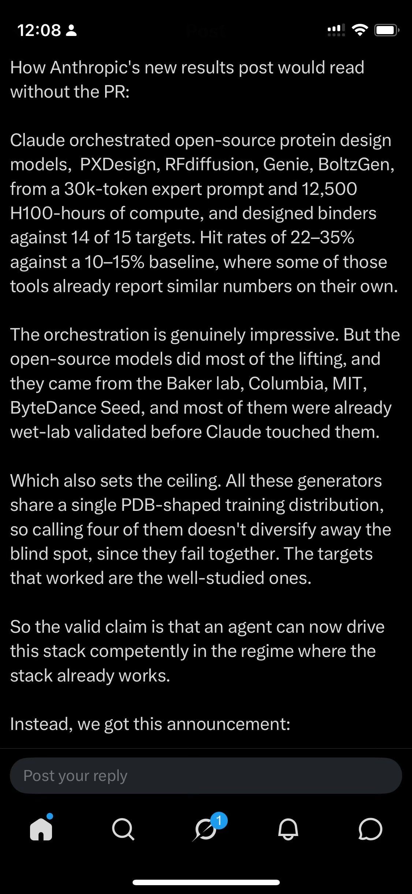

Software engineering constantly reinvents old ideas. Fields from philosophy, mathematics, biology, and early computing regularly resurface under new marketing names.
That does not automatically make the new work dishonest or worthless. New generations face similar problems, institutional memory is uneven, and new hardware can make an old idea practical at a different scale.
A tale as old as time itself
Some familiar examples, stated as analogies rather than exact equivalences:
- Microservices repackaged service-oriented architecture and older ideas about modularity and small composable programs.
- NoSQL revisited non-relational data models, denormalised storage, and distributed systems trade-offs that predate the label.
- Serverless brought a new developer experience to ideas related to timesharing, utility computing, and remote execution.
- Functional programming repeatedly repopularised ideas rooted in the lambda calculus and early language research.
The pattern has a few recurring causes:
- Industry amnesia: people and organisations move on, and institutional memory does not move cleanly with them.
- New hardware: a slow or expensive idea becomes fast and cheap enough to use routinely.
- Rebranding: a familiar practice gets a sharper name, a cleaner demo, and a market around it.
- Distribution: a large company can turn a scattered practice into a product, standard, or ecosystem that many more people can actually adopt.
The last item is important. Distribution is real value. It is also not the same thing as invention.
Novelty claims need to be assessed carefully
Google's recent Agentic Resource Discovery proposal is a sensible proposition. Agents need a way to find capabilities outside the registry or platform they started in, and they need to establish who published a capability before connecting to it. ARD packages that problem as a discovery layer: catalogs describe capabilities, registries index them, domain ownership supplies an identity anchor, and trust metadata can be checked before a connection is made.
That is useful standardisation work. It is also not the invention of zero trust, service discovery, registries, signed metadata, domain-anchored identity, least-privilege policy, or auditability. Those are older practices from network security, distributed systems, identity infrastructure, package ecosystems, and safety engineering. NIST's Zero Trust Architecture publication alone predates the current agent vocabulary by years. Nonetheless, some tech journalists love to conclude something that often is not in Google's announcements, while other companies do tend to imply novelty where there is not any.
The distinction matters because AI infrastructure repeatedly turns an existing practice into a new category name. A large vendor gives it a specification, a reference implementation, a product surface, and a distribution channel. That can make the practice easier to adopt. It does not move the origin of the underlying idea to the date of the announcement.
This is not an accusation of copying. Independent convergence is normal when a new application area creates the same engineering needs. The concept has an analogue in evolutionary biology too: convergent evolution. The useful question is: what is new here — the primitive, the standard, the implementation, or the reach?
We all learn from prior art — very little out there is truly novel
In May, I started building Testudo to address some of the same broad trust concerns that ARD now makes visible in an agent-discovery setting. I looked up prior art and built an execution boundary from familiar primitives:
- declarative permissions;
- append-only audit logs;
- container isolation;
- input and output sanitisation; and
- read/write separation.
The security model then grew in stages:
- HMAC-SHA256 receipts for local content integrity;
- host-issued capability tokens for scoped permissions;
- P-256/ES256 public-key signatures; and
- runtime identity binding for each worker or agent.
The overlap with ARD is partial convergence. Different needs can lead different projects to use the same older ideas.
ARD asks: what resource exists, who claims it, and can I verify it before invocation?
Testudo asks: may this worker perform this scoped operation, and can the operator prove what happened?
Both systems use familiar primitives: identity, scope, authenticity, freshness, and verification. Neither needs to claim that it invented them. The novelty problem often enters through headlines and blog commentary. A new AI-agent setting can make an old primitive look new even when it is not.
The new contribution may be the combination, the standard, the enforcement, the evidence, or the distribution. It should not be described as the invention of the underlying primitive unless it really is one.
OKF is a format contribution, not the birth of agent-readable knowledge
Google Cloud's Open Knowledge Format is another useful example. OKF defines a small, portable convention: markdown files, YAML frontmatter, links, optional indexes, and metadata for provenance, trust, lifecycle, and verification. A human can read it, an agent can parse it, and a repository can version it.
That is a good interoperability target. It is also a formalisation of patterns that were already widespread: git-backed documentation, wikis, frontmatter, index files, linked notes, metadata-as-code, knowledge bases, and the “LLM-wiki” pattern. Google's own announcement acknowledges the family resemblance to tools and conventions such as Obsidian, Notion, Hugo, and agent-oriented repository instruction files. The contribution is the attempt to make the convention portable and interoperable, not the invention of markdown, YAML, links, provenance, or graph traversal.
Unfortunately, attempts to introduce standard formats are often met with variable success. It is not that standards are bad. It is that the proposed “universal standard” often becomes standard number fifteen, as in Randall Munroe's cartoon below.
Standardisation may be well intentioned, but the useful test is practical: do independent tools implement the format? Is there a clear migration path? Does it reduce work for users? Does it survive outside the organisation that proposed it? The lineage statement should say “we are standardising and extending an existing pattern,” not “we discovered the pattern.”

Computational biology has lived this joke for years. We have formats for sequences, reads, alignments, variants, annotations, structures, and single-cell matrices, to name a few. Each format solves a real problem. Each also creates another converter, wrapper, schema, or import step. Meanwhile, the field keeps moving forward, one perfectly reasonable format at a time.
It may well be that OKF will reduce friction between existing tools. It may also add another layer. A format only helps when tools adopt it, preserve its meaning, and work with it without extra translation. Otherwise it becomes another file format, converter, and documentation task — the fifteenth standard in the cartoon.
Everybody does graphs
Docling Graph is another example of a useful document-processing package. It converts documents into validated structured objects, builds directed graphs with explicit relationships, and records provenance back to source chunks and pages. That is practical engineering, and the grounding and validation details are valuable.
But the ingredients are not new in isolation. There may well be dozens, if not more, packages that precede it — mine included — some better than others: document parsing, schema-guided extraction, knowledge graphs, ontologies, provenance ledgers, page-level grounding, graph visualisation, and queryable relationships all predate this library. Its contribution is integration of an already excellent document-processing product into a single workflow. To reiterate the sentiment, a project does not need to invent the primitive to be worth using.
The problem begins when the publicity language quietly shifts from “a good implementation of an established pattern” to “the pattern has just been invented.” The brand amplifies the announcement, and the amplification gets remembered as origin.
HaaS: hype as a service
I sometimes think of this packaging layer as HaaS: hype as a service. The formula is familiar:
existing primitives + orchestration + a polished benchmark + a famous brand = a new category in the public imagination.
That is deliberately humorous, not a claim that the engineering is empty. A managed service can add reliability, permissions, observability, lower operational cost, and a much better developer experience. Those are legitimate contributions. The question is which contribution is actually being claimed.
The fair comparison is not “they copied it” versus “they invented it.” It is:
- Is there a new algorithm or protocol?
- Is there a better managed implementation of an established technique?
- Is the real improvement governance, interoperability, latency, cost, or operational reliability?
- Can the claimed gain be reproduced outside the vendor's platform and compared with credible open-source and historical baselines?
The same questions apply to OpenAI, Google, Anthropic, Microsoft, Databricks, and every other well-funded participant in the current agent market. The larger the megaphone, the more important it is to separate the primitive from the packaging.
Dario sets out to save mankind — winds up saving his IPO instead?
A recent Anthropic announcement about Claude and de novo protein binders makes the distinction visible outside infrastructure. The reported result is interesting: Claude worked from a human-written expert protocol, orchestrated a specialist computational workflow, and produced candidates that partner labs could build and test.

Click to enlarge.
The screenshot above is a useful prompt for the question, not a substitute for the primary evidence. The result may be important evidence about agentic orchestration. It is not, by itself, evidence that Claude invented de novo protein design, the underlying generative models, or wet-lab validation. Protein-design systems such as RFdiffusion and BindCraft already embody substantial domain-specific work.
The stronger and more interesting claim is more specific: a frontier model can operate an established design stack under an expert-specified protocol and produce experimentally testable candidates with human intervention. To establish a broader claim of scientific discovery, we would want ablations for the expert prompt, the underlying tools, model-only versus tool-assisted performance, compute-matched baselines, target selection, and independent replication. The orchestration may be genuinely impressive while the novelty still belongs to the system composition rather than to every component in the system.
A better way to talk about novelty
When a new agent infrastructure or AI-for-science announcement arrives, I find it useful to ask four questions:
- What old engineering problem is this addressing?
- Which primitives and standards does it reuse?
- What does the new work make interoperable, enforceable, measurable, or easier to adopt?
- What is genuinely new in the implementation or evidence?
That framing gives credit in the right place. No description needs the stronger claim that the underlying idea did not exist before. In fact, acknowledging the lineage makes the new work more credible: it tells readers whether to adopt a standard, reuse an implementation, compare architectures, or investigate a genuinely new mechanism.
The recurring cycle
The cycle is now familiar:
- A long-standing practice is used in a new AI-shaped setting.
- The practice receives a new name and a clean reference implementation.
- A large vendor gives it a launch post and an ecosystem.
- The surrounding discourse treats the launch as the beginning of the idea.
The answer is not cynicism. A standard that makes old ideas easier to discover, implement, test, and exchange can be materially better than a dozen incompatible local versions.
The answer is better attribution and more precise novelty claims. We should be able to say both things at once: “this is useful work” and “the primitive has a history.”
That is the boundary I want to keep clear in agent infrastructure. The future will need better discovery, knowledge representation, graph retrieval, and runtime trust boundaries. It will also need a memory longer than the last vendor announcement.
Small disclosure: To paraphrase Terence Tao's recent slides, I do solemnly swear that any em dashes have been generated by me.
References
- NIST SP 800-207: Zero Trust Architecture.
- Google Cloud: Introducing the Open Knowledge Format.
- OKF specification.
- Agentic Resource Discovery specification.
- AI Catalog working group.
- Docling Graph.
- Testudo.
- Databricks: Build agents.
- Databricks: Evaluate AI Search retrieval quality.
- Anthropic: Claude accelerates protein design.
- RFdiffusion.
- BindCraft.
- Randall Munroe, xkcd #927: “Standards”.